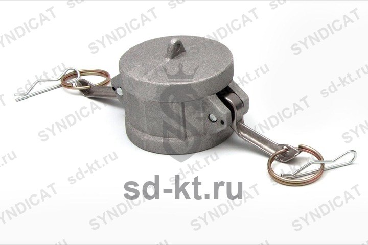

Камлок алюм. DC-200 2" (50 мм)
Артикул: 0652
Раздел: Быстроразъемные соединения (БРС) · АЗС
Цена и наличие — по запросу. Поставляем оригинал и аналоги. Доставка по России.
Модификации и размеры (11)
- Камлок алюм. D-300 3" (75 мм) · арт. 0644
- Камлок алюм. DC-300 3" (75 мм) · арт. 0646
- Камлок алюм. DC-200 2" (50 мм) · арт. 0652
- Камлок алюм. DC-400 4" (100 мм) · арт. 0658
- Камлок алюм. DP-400 4" (100 мм) · арт. 0662
- Камлок алюм. DP-200 2" (50 мм) · арт. 0669
- Камлок алюм. DP-300 3" (75 мм) · арт. 0670
- Камлок алюм. B-200 2" (50 мм) · арт. 0673
- Камлок алюм. D-400 4" (100 мм) · арт. 0678
- Камлок алюм. B-400 4" (100 мм) · арт. 0679
- Камлок алюм. B-300 3" (75 мм) · арт. 0686
Подберём нужный вариант — уточните при запросе.
Описание
Камлок алюм. DC-200 2" (50 мм) — позиция из раздела «Быстроразъемные соединения (БРС)» для АЗС. Компания SYNDICAT поставляет оборудование и комплектующие для автозаправочных и газозаправочных станций по всей России. Цена и наличие «Камлок алюм. DC-200 2" (50 мм)» — по запросу: оставьте заявку или позвоните, подберём оригинал или аналог и рассчитаем доставку.